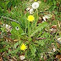
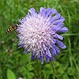
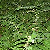

Compiled with assistance from Mike Betteridge, Steve Joul, Gwen Leach, Judy Howells, Adam Bull, and the Natural History Museum, London.
This page includes information on all the plant life found in Gledhow Valley Woods. At present there are details of 186 species of plants listed in alphabetical order by common name...
A | B | C | D | E | F | G | H | I | J | K | L | M | N | O | P | Q | R | S | T | U | V | W | X | Y | Z
Please wait until the page has finished loading, then click on any photo below to see a larger version (see Instructions for details).

Dandelion
Taraxacum officinale
Devil's Bit Scabious
Succisa pratensis- Dog's Mercury
Mercurialis perennis
- Domestic Apple
Malus sp.
- Downy Birch
Betula pubescens

Garden Solomon's Seal
Polygonatum x hybridum- Garlic Mustard; Jack-by-the-hedge
Alliaria petiolata
- Germander Speedwell
Veronica chamaedrys
- Giant Fescue
Festuca gigantea
- Gooseberry
Ribes uva-crispa
- Goose Grass; Cleavers
Galium aparine
- Great Willowherb
Epilobium hirsutum
- Great Woodrush
Luzula sylvatica
- Greater Periwinkle
Vinca major
- Greater Plantain; Rat's Tail
Plantago major
- Green Alkanet
Pentaglottis sempervirens
- Ground Elder; Goutweed
Aegopodium podagaria
- Groundsel
Senecio vulgaris
- Guelder Rose
Viburnum opulus
- Hairy Bamboo
Sasaella ramosa
- Hairy Brome
Bromopsis ramosa
- Hairy Woodrush
Luzula pilosa
- Hart's Tongue
Asplenium scolopendrium
- Hawthorn
Crataegus monogyna
- Hazel
Corylus avellana
- Hedge Bindweed
Calystegia sepium
- Hedge Mustard
Sisymbrium officinale
- Hedge Woundwort
Stachys sylvatica
- Herb Robert
Geranium robertianun
- Hogweed
Heracleum sphondylium
- Holly
Ilex Aquifolium
- Honesty
Lunaria annua
- Hornbeam
Carpinus betulus
- Horse Chestnut
Aesculus hippocastanum
- Indian Balsam
Impatiens glandulifera
- Indian Rhubarb
Darmera peltata
- Iris
Iris sp.
- Ivy-Leaved Speedwell
Veronica hederifolia
- Japanese Knotweed
Fallopia japonica
- Japanese Larch
Larix kaempferi
- Knotgrass
Polygonum aviculare
- Large Flowered Evening Primrose
Oenothera glazioviana
- Laburnum
Laburnum anagyroides
- Lady Fern
Athyrium filix-femina
- Lady's Mantle
Alchemilla xanthochlora
- Lesser Burdock
Arctium minus
- Lesser Celandine
Ranunculus ficaria
- Lords-and-ladies; Cuckoo Pint
Arum maculatum
- Male Fern
Dryopteris filix-mas
- Marsh Marigold
Caltha palustris
- Meadow Buttercup
Ranunculus acris
- Meadow Cranesbill
Geranium pratense
- Meadow Foxtail
Alopecurus pratensis
- Meadow Vetchling
Lathyrus pratensis
- Meadowsweet
Filipendula ulmaria
- Mugwort
Artemisia vulgaris
- Nettle-leaved Bellflower; Throatwort; Huskwort
Campanula trachelium
- Nipplewort
Lapsana communis
- Norway Maple
Acer platanoides
- Oxeye Daisy
Leucanthemum vulga
- Pendulous Sedge
Carex pendula
- Perforate St. John's Wort
Hypericum perforatum
- Pignut
Conopodium majus
- Pineappleweed
Matricaria discoidea
- Poppy (Flanders)
Papaver rhoeas
- Poplar (hybrid)
Populus x canadensis
- Prickly Sow Thistle
Sonchus asper
- Primrose
Primula vulgaris
- Purple Loostrife
Lythrum salicaria
- Pussy Willow; Goat Willow
Salix caprea
- Ragged Robin
Lychnis flos-cuculi
- Ramsons; Wild garlic
Allium ursinium
- Red Campion
Silene dioica
- Red clover
Trifolium Pratense
- Red Fescue
Festuca rubra
- Red Valerian
Centranthus ruber
- Rhododendron
Rhododendron ponticum
- Ribwort Plantain
Plantago lanceolata
- Rose-bay Willowherb
Chamerion angustifolium
- Rough Hawksbit
Leontodon hispidus
- Rough Meadow-grass
Poa trivialis
- Rowan; Mountain Ash
Sorbus aucuparia
- Scaly Male Fern
Dryopteris affinis
- Selfheal
Prunella vulgaris
- Sessile Oak
Quercus petraea
- Silver Birch
Betula pendula
- Smooth Meadow-grass
Poa pratensis
- Smooth Sow Thistle
Sonchus oleraceus
- Snowberry
Symphoricarpos albus
- Snowdrop
Galanthus nivalis
- Soft Rush
Juncus effusus
- Solomon's Seal
Polygonatum multiflorum
- Spear Thistle
Cirsium vulgare
- Spiraea
Spiraea sp.
- Spotted Deadnettle
Lamium maculatum
- Spreading Bellflower
Campanula patula
- Stinging Nettle
Urtica dioica
- Swedish Whitebeam
Sorbus intermedia
- Sweet Chestnut
Castanea sativa
- Sweet Vernal Grass
Anthoxanthum odoratum
- Sycamore
Acer pseudoplatanus
- Teasel
Dipsacus fullonum
- Thyme-leaved Speedwell
Veronica serpyllifolia
- Timothy
Phleum pratense
- Tufted Hair-grass
Deschampsia cespitosa
- Tufted Vetch
Vicia cracca
- Tutsan
Hypericum androsaemum
- Water Avens
Geum rivale
- Wavy Bittercress
Cardamine flexuosa
- Wavy Hair-grass
Deschampsia flexuosa
- Welsh Poppy
Meconopsis cambrica
- Western Balsam Poplar
Populus trichocarpa
- Western Red Cedar
Thuja plicata
- White Clover
Trifolium repens
- Whitebeam
Sorbus aria
- Wild Cherry
Prunus avium
- Wild Raspberry
Rubus idaeus
- Wood Anenome
Anemone nemorosa
- Wood Avens; Herb Bennet
Geum urbanum
- Wood Dock
Rumex sanguineus
- Wood Forget-me-not
Myosotis sylvatica
- Wood Melick
Melica uniflora
- Wood Millet
Milium effusum
- Wood Sedge
Carex sylvatica
- Wood Sorrel
Oxalis acetosella
- Wych Elm
Ulmus glabra
- Yellow Archangel
Lamiastrum galeobdolon
- Yellow Flag
Iris pseudacorus
- Yellow Pimpernel
Lysimachia nemorum
- Yellow/American Skunk Cabbage
Lysichiton americanus
- Yew
Taxus baccata
- Yorkshire Fog Grass
Holcus lanatus
Instructions
Click on an image to see a larger version (it should appear in the centre of the screen on a dark background). Whilst viewing a large version, you can move on to the next image using the "Next" button (which appears when you move your mouse cursor over the right-hand side of the image) or by hitting the right-arrow key on your keyboard. Move to a previous image in a similar manner using the "Prev" button (which appears when you move your mouse cursor over the left-hand side of the image) or by hitting the left-arrow key on your keyboard. When you've done viewing the large images, leave by clicking on the "Close" button or by hitting the "Esc" key on your keyboard.
If you can't move between photos it may be because you did not wait until the whole page had finished loading before clicking on an image - just go back to the main Plants of Gledhow Valley Woods page and wait until all the little plant images have finished appearing. Another possible cause is that JavaScript is unavailable on your web browser for some reason - in this case the larger images will open as single images and you will not be able to use the extra image browsing functions.
Note: There are still plants which are not yet pictured. We would be very grateful for any help you can give in completing our gallery ...if you have any photographs we can use please contact us.


{kind=link}
{kind=link}
{kind=link}
{kind=link}
{kind=link}
{kind=link}
{kind=link}
{kind=link}
{kind=link}
{kind=link}
{kind=link}
{kind=link}
{kind=link}
{kind=link}
{kind=link}
{kind=link}
{kind=link}
{kind=link}
{kind=link}
{kind=link}
{kind=link}
{kind=link}
{kind=link}
{kind=link}
{kind=link}
{kind=link}
{kind=link}
{kind=link}
{kind=link}
{kind=link}
{kind=link}
{kind=link}
{kind=link}
{kind=link}
{kind=link}
{kind=link}
{kind=link}
{kind=link}
{kind=link}
{kind=link}
{kind=link}
{kind=link}
{kind=link}
{kind=link}
{kind=link}
{kind=link}
{kind=link}
{kind=link}
{kind=link}
{kind=link}
{kind=link}
{kind=link}
{kind=link}
{kind=link}
{kind=link}
{kind=link}
{kind=link}
{kind=link}
{kind=link}
{kind=link}
{kind=link}
{kind=link}
{kind=link}
{kind=link}
{kind=link}
{kind=link}
{kind=link}
{kind=link}
{kind=link}
{kind=link}
{kind=link}
{kind=link}
{kind=link}
{kind=link}
{kind=link}
{kind=link}
{kind=link}
{kind=link}
{kind=link}
{kind=link}
{kind=link}
{kind=link}
{kind=link}
{kind=link}
{kind=link}
{kind=link}
{kind=link}
{kind=link}
{kind=link}
{kind=link}
{kind=link}
{kind=link}
{kind=link}
{kind=link}
{kind=link}
{kind=link}
{kind=link}
{kind=link}
{kind=link}
{kind=link}
{kind=link}
{kind=link}
{kind=link}
{kind=link}
{kind=link}
{kind=link}
{kind=link}
{kind=link}
{kind=link}
{kind=link}
{kind=link}
{kind=link}
{kind=link}
{kind=link}
{kind=link}
{kind=link}
{kind=link}
{kind=link}
{kind=link}
{kind=link}
{kind=link}
{kind=link}
{kind=link}
{kind=link}
{kind=link}
{kind=link}
{kind=link}
{kind=link}
{kind=link}
{kind=link}
{kind=link}
{kind=link}
{kind=link}
{kind=link}
{kind=link}
{kind=link}
{kind=link}
{kind=link}
{kind=link}
{kind=link}
{kind=link}
{kind=link}
{kind=link}
{kind=link}
{kind=link}
{kind=link}
{kind=link}